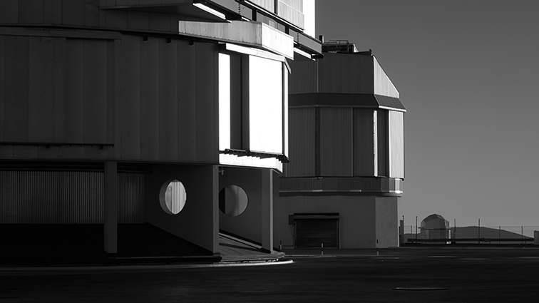

Paranal (VLT)
FULL HD VIDEO WITH STEREO SOUND. LENGTH: 6:50

Paranal (VLT) records the Very Large Telescope, an astronomical observatory located in the Atacama Desert. The video shows the facilities and the automated machinery of one of the largest optical telescopes in the world.. Documentary images are combined with 3D animations to explain the functioning of the optical instruments of the telescope. The film also depicts the underground dwelling place of the centre: an artificial environment with a green and humid microclimate as a counterpoint of the extreme aridity of the desert.
Andromeda M31
FULL HD VIDEO WITH STEREO SOUND. LENGTH: 10:13

Andromeda M31 presents the scientific analysis carried out by Astrophysicist Dr. Volker Ossenkopf on a laptop wallpaper image: an astronomical photograph of the Andromeda M31 galaxy.
Such images are recorded by telescopes that capture electromagnetic waves outside the visible spectrum of light, and are then turned into intelligible visual information. The video seeks to clarify to what extent these images, seen daily by thousands of users, represent reality.
Elisa Balmaceda (Santiago de Chile, 1985) lives and works in Berlin. She studied Fine Arts at the Catholic University of Chile (2007) and later obtained a Magister degree in Media Arts at the Academy of Media Arts Cologne, Germany (2015). Her practice incorporates photography, film, video, installations and luminic art; media through which the artist explores the link between art, landscape, technology, and magical thinking.
www.elisabalmaceda.com